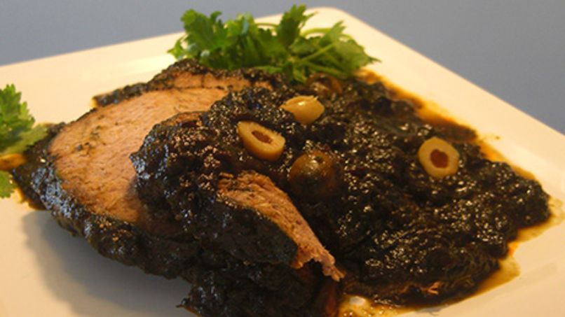

Asado Negro
ingredientes:
- 5 lb de carne de res
- 1/2 limón
- 5 dientes de ajo, pelados y machacados
- 1/4 taza de salsa de soya (baja en sodio)
- 2 cucharaditas de mostaza
- 1/2 cucharadita de comino en polvo
- 1/4 taza de aceite vegetal
- 1 cebolla grande blanca, pelada y cortada en cuatro
- 1 pimentón rojo, sin semillas y cortado en finos pedazos
- 4 ramilletes de cebollín o cebollino
- 1 ramito de cilantro
- 1 1/2 taza de papelón rallado (concentrado de caña de azúcar)
- 1 lata pequeña de puré de tomate
- Sal al gusto
- 1/2 taza de aceitunas verdes rellenas de pimentón